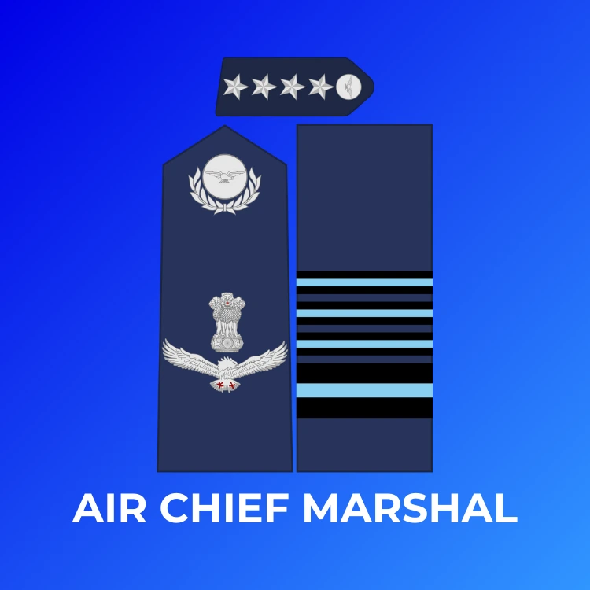
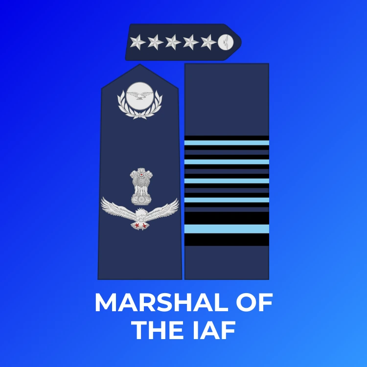
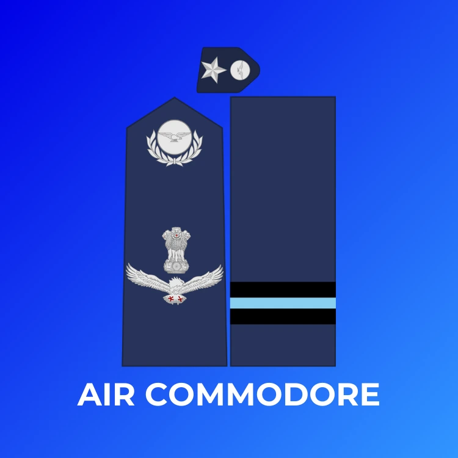
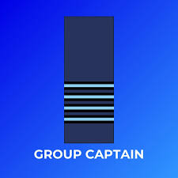
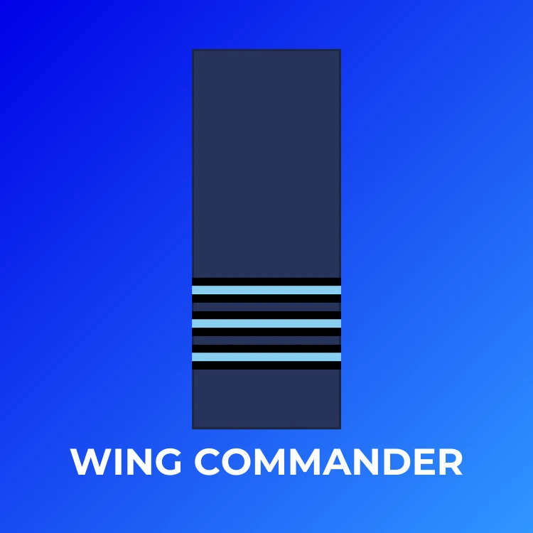
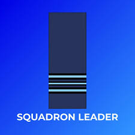
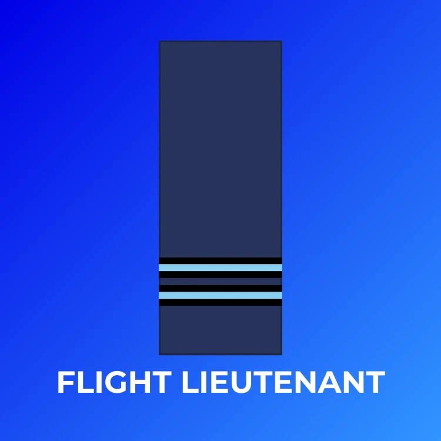

Air Chief Marshal |
An Air Chief Marshal's insignia features four stars, often with other emblems like an eagle and sword, worn on shoulder badges (epaulettes) and sleeve stripes, with distinct sky blue and navy blue bands; they wear gorget patches with four stars and oak leaves, representing the highest professional rank in the Indian Air Force |
|---|---|
Air Marshal |
An Air Marshal's rank insignia in the Indian Air Force (IAF) typically features shoulder pips (stars) (often three stars for Air Marshal) and sleeve stripes.The imagery involves stars (pips), colored bands on sleeves, and specific patches, with the Marshal of the Air Force having unique, highly distinguished insignia and flags, reflecting their top-tier status. |
Air Commodore |
An Air Commodore's rank insignia typically features one broad dark blue band and one narrow sky blue band on the sleeve, representing their one-star equivalent rank, often seen with one star on shoulder boards/gorget patches |
Group Captain |
A Group Captain's insignia in the Indian Air Force (IAF) features four sky-blue bands on a wider navy-blue band on the sleeves, topped by a wreath and the Ashoka Lion emblem on the shoulder board |
Wing Commander |
A Wing Commander's rank insignia typically features one thick stripe and two thinner stripes (or three narrow stripes) on the shoulder or sleeve |
Squadron Leader |
A Squadron Leader in the Indian Air Force (IAF) rank insignia is identified by one thick blue stripe on a black band, with two thin blue stripes below it on a black band, worn on the sleeves or shoulders, signifying a mid-level leader commanding flights or operational units, |
Flight Lieutenant |
A Flight Lieutenant's rank insignia in the Indian Air Force (IAF) typically features two narrow blue stripes on their sleeves or shoulder boards, signifying an experienced officer level between Flying Officer (one stripe) and Squadron Leader (three stripes), representing leadership and command responsibility. |
Flying Officer
|
A Flying Officer is the entry-level commissioned rank for officers in air forces like the Indian Air Force (IAF), serving as the starting point for pilots, air traffic controllers, and officers in technical/ground support roles after training. They perform junior leadership, planning, and operational duties, handling tasks like mission prep, aircraft checks, administration, or logistics, depending on their specialized branch, with insignia usually being a single narrow stripe. |